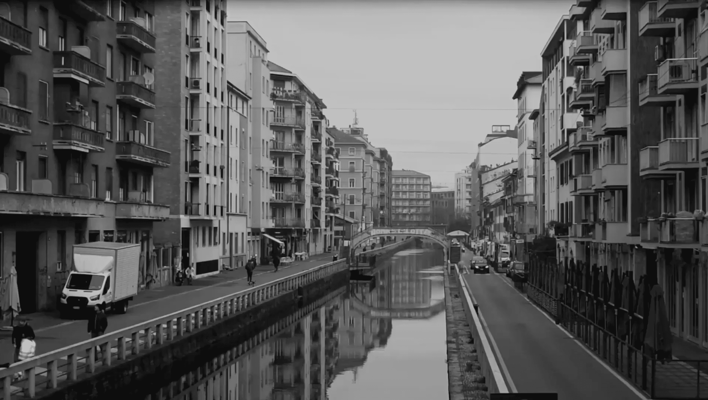
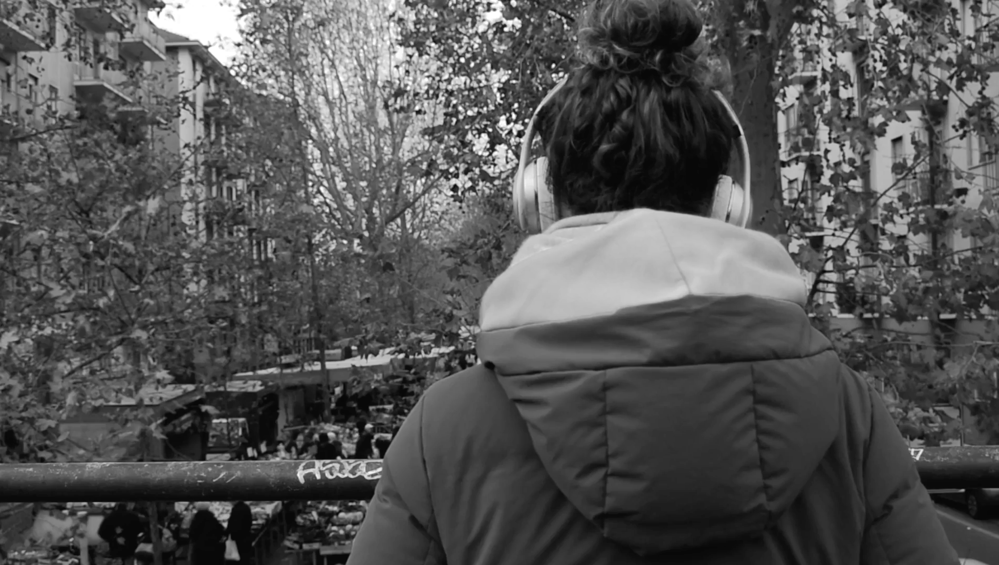
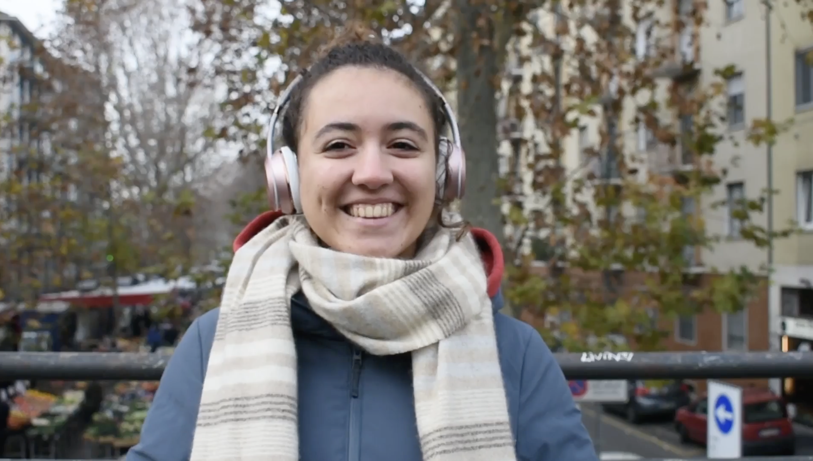

IL CONCEPT VIDEO - TRENCH
Il video è ispirato a Trench, album dei Twenty One Pilots, e si propone di tradurne visivamente i temi principali.
Il video si apre in bianco e nero, mostrando paesaggi urbani vuoti e privi di vita, metafora di una condizione di isolamento e anestesia emotiva. Progressivamente compaiono figure anonime negli stessi spazi, immobili e di spalle, senza che i loro volti siano visibili. Successivamente, una mano si posa delicatamente sulla spalla di ciascun individuo, lasciando una piccola striscia di nastro giallo, unico elemento cromatico presente nella scena. Una dopo l’altra, le figure iniziano a voltarsi, rivelando espressioni serene. Con la diffusione del colore giallo, anche l’ambiente circostante riacquista progressivamente colore.
l video esplora il tema della depres- sione e il potere silenzioso della connessione umana, suggerendo come il processo di guarigione possa avere origine non da gesti eclatanti, ma dal riconoscimento condiviso della sofferenza e dalla consapevolezza di non essere soli. Il giallo, colore simbolico ricorrente nell’album, rappresenta la speranza e la possibilità di ritrovare la gioia.

